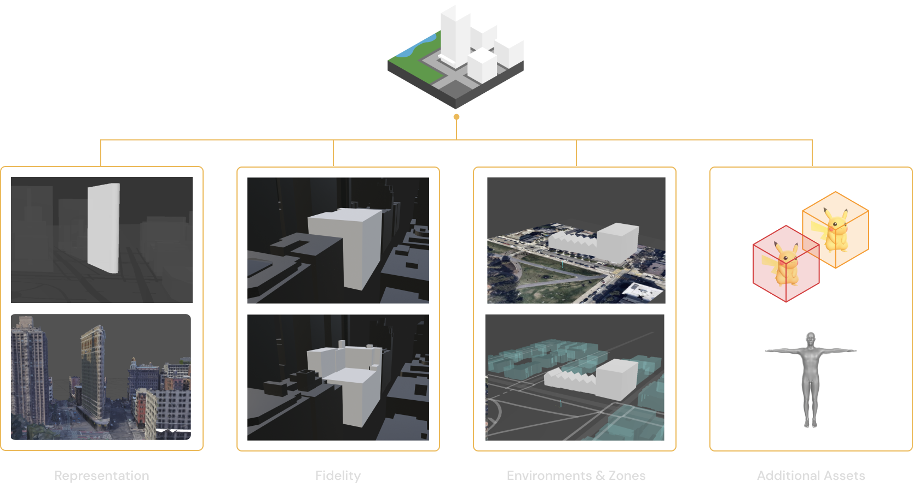
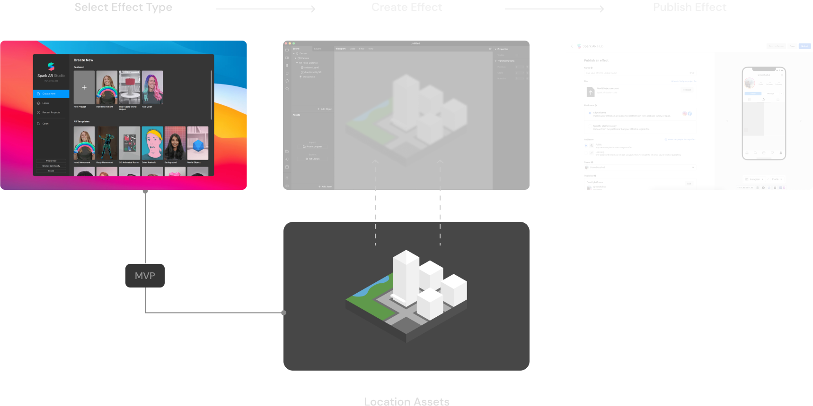

So that users could experience AR effects around their city, Meta needed to enable their Creators to make and publish location-based effects
Spark AR is a Meta-owned platform that allows anyone to create AR effects for users to access and experience at home. Meta wanted to expand this to enable the creation of AR effects that could be viewed at popular real-world locations. Although Spark was well established, the notion of AR outside of the home was new territory for Meta. As such, there were major challenges to be solved along the way, from the creation of the maps to getting creators to use them.
Understanding the challenge
To gain initial understanding, I planned and executed a design sprint that included a wide range of participants across multiple teams. This was essential to gather knowledge and establish an understanding of what needed to be considered with regards to each the user, business, and technology. Many aspects were identified through this process; most notably:
- Current Tech Solutions - Up until this point, engineering teams had assumed that dense point cloud reconstructions could be used within Spark as the template for effects to be created around. However, through these sessions we decided that a more refined solution was required.
- Varying Locations - Where effects could be created was pre-defined, which included a wide range of characteristics (eg from the Manhattan skyline to non-descript alleyways). This presented the challenge of ensuring each location was represented to a suitable level of detail.
- Effect Restrictions - With safety a top priority, we identified the need for 'zones' to define where effects can be created and viewed from (eg to avoid users walking into roads). This presented an additional challenge of ensuring Creators were aware of where effects may and may not be positioned.
With these identified, we were then able to define what unique Creator needs we needed to satisfy to support this functionality.
Current reconstructions
Varying locations
Effect restrictions
Exploration
With the problems to be solved defined, it was time to understand the user journey a Creator would take when making an effect. At the highest level, a Creator would:
- Select effect type (eg face filter, location, etc)
- Create an effect using the Spark tooling around a reconstruction of the location
- Publish the effect to their chosen platform
As the Spark platform was well established, any changes to the core flow would need to be justified with it's owners. We knew this would be challenging without any data to support our assumptions (launching this functionality into Spark would be the first time any users were able to see or use this feature). However, we had complete control over the assets we would be delivering (ie the mesh of a location), and so exploration for how to solve the Creator needs focused on this area.
Through various methods, I explored a wide range of potential solutions, from the detail and extent of the reconstruction, to the inclusion of additional assets. Where possible this exploration was done using real data so that we could assess solutions based on real examples. Whilst this was more challenging overall, we soon realised it was necessary to avoid simplification of challenges.
To assist with this, I created a simple 'Mesh Designer' tool (using OSM data and Mapbox JS) that allowed anyone to create their own ideal mesh of a location. With this, I was able to run workshops with the engineering teams to help them understand the requirements of the reconstruction as well as allow them to communication potential limitations.

Although we knew that any changes to the existing platform would be difficult to implement, I also explored some options for changes that could be utilized. Some examples of these were:
- Providing additional media to allow Creators to get familiar with a location
- Utilizing a 2D map to provide zone information and feedback
- Restricting movement of assets / providing feedback when assets were moved to disallowed zones
- Running checks prior to publishing to identify any assets positioned illegally.
Proposed integration
All of our potential solutions required exensive iteration, whether due to technical limitations (eg of mesh reconstructions) or through consultations with the Spark team to understand feasibility. As this was essentially an MVP launch to validate a new product feature, we had to minimize the changes we could make to the existing platform. As such, our final proposal focused on non-negotiable changes to the Spark import flow, and on the location meshes that we had full control over.
Location Meshes
Largely due to the varying location characteristics, we landed on a solution that delivered several meshes to assist with effect creation. These included just the core landmark (providing obstruction-free creation for familiar Creators), environment guides (showing where physical and non-physical restrictions existed), and full environment meshes (displaying all mapped physical features within the area). These could be utilized individually or combined by the Creator by instantiating each as required. The full physical environment would then also be used in the preview as well as provide occlusion in the end experience.
Restructuring template architecture
Whilst we weren't proposing changes to the platform tooling for launch, we did require restructing of the initial UX. The existing architecture placed all effect types on one layer, which would be flooded with our ~50 initial launch locations. As such, we proposed a categorized archicture allowing for improved navigation, which was allowed us to provide more details of locations up front to assist with familiarization before creation even begins.